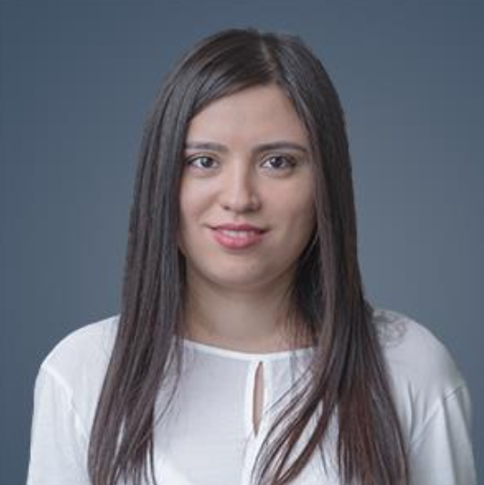

Gozal Minibayeva

Summary
I am a hardworking and dedicated individual with experience in IT support.
Education
- Specialist degree, Theoretical and Computational Linguistics - Ulyanovsk State Technical University (2004-2009)
Work Experience
Core Applications Support, Senior Specialist - PASHA Bank OJSC
April 2020 – till now
Application Support Officer - PASHA Bank OJSC
Mar 2013 – April 2020
- Application Support of such applications as CBS (BankSyst, later FlexCube), SafeWatch Profiling, Payment Systems (XOHKS, AZIPS, KOMIS), JIRA and others
- Ensuring robust functioning of critical systems and services 24/7
- Installing software upgrades, packages, patches, hot-fixes and ensure that Bank’s systems are maintained and fit the purpose
- Providing ongoing support to users requiring assistance with business applications
-
Operations and Control Department, Specialist - PASHA Bank OJSC
Feb 2010 – Mar 2013
- Payment processing in CBS and external payment systems
- Preparing reports
- Participating in Operations dept. projects (e.g. migration to new CBS)
-
Sales Director Assistant-Analyst - Ideal-L LTD
Aug – Dec 2009
- Sales efficiency analysis on different parameters, control of the work and further activity planning for employees of sales dpt.
- Drawing up of daily and monthly reports (work in 1C accounting software and in MS Excel)
- Bonus and commissions calculation
Skills
- Oracle SQL: ⭐️⭐️⭐️⭐️⭐️
- Linux OS basics: ⭐️⭐️⭐️
- FrontEnd Development: ⭐️⭐️⭐️⭐️
Awards and Certifications
- Back Office Star of the Year - PASHA Bank OJSC (2016)
Other